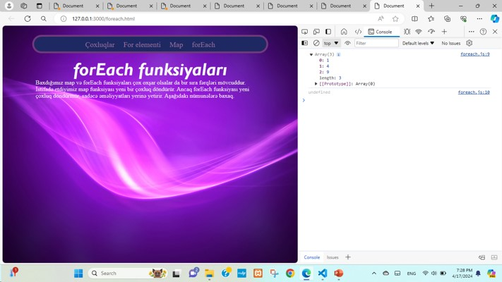
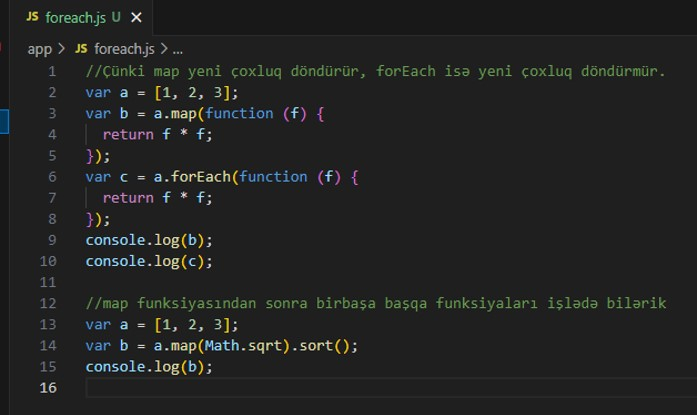
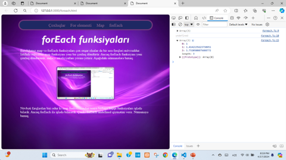

forEach funksiyaları
Baxdığımız map və forEach funksiyaları çox oxşar olsalar da bir sıra fərqləri mövcuddur. İstifadə etdiyimiz map funksiyası yeni bir çoxluq döndürür. Ancaq forEach funksiyası yeni çoxluq döndürmür, sadəcə əməliyyatları yerinə yetirir. Aşağıdakı nümunələrə baxaq.

Növbəti fərqlərdən biri odur ki map funksiyasından sonra birbaşa başqa funksiyaları işlədə bilərik. Ancaq forEach ilə işlədə bilmərik. Çünki forEach undefined qiymətini verir. Nümunəyə baxaq.
Burada kök altı funksiyası map vasitəsilə bütün elementlərə tətbiq olunur. Ondan sonra isə sort funksiyası işləyir və heç bir problem çıxmır. Nəticə olaraq aşağıdakı alınır:

